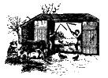
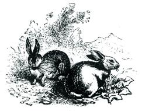

Ah, the vicissitudes of time. Two years ago, when there were no currently relevant small-scale-farming introductory handbooks available, many of us welcomed the publication of Richard Langer's Grow It! with open arms. Now that we're all older and more experienced, however, some folks find it increasingly easy to criticize that breakthrough beginner's guide (see the "Feedback" sections of Mother Earth News no.s 23, 24 and 25).
Which brings us to another breakthrough book that is just as important (probably more so) now as Grow It! was two years ago, and which may well come up for its share of criticism in another 24 months or so.
Be that as it may, John and Sally Seymour's record of 18 successful years on a shirttail-sized homestead in England is important now and should offer welcome encouragement to today's back-to-the-landers, both real and imaginary. I started serializing this book in my no. 25 issue and I'm sure that many readers will want a personal copy for their home libraries.
He who can deliberately inflict torture upon an animal, is an abuser of the authority which God has given him and is,
indeed, a tyrant in his heart. -William Cobbett
And that rules out, completely and absolutely, Belsen houses of whatever nature they be: battery houses or broiler houses. To confine, whom nature has given the urge to scrap, to perch, to flap her wings, to take dust baths, in a wire cage in which she cannot do any of these things, is revoltingly cruel and I cannot bring myself to talk to anybody who does it, nor would I, on any condition, allow such a person inside my house.
Let your hens run outside, so that they can suffer, as we do, the heat of the sun and the bite of the frost. No animal was meant always to be kept at the same temperature. Let them have a house in which they can perch at night away from the foxes and the rain, although hens do very well indeed, in our climate, just perching in trees. Give each hen a handful of grain every evening and a handful or two of high protein food in the morning, and any scraps you can spare. They will eat a lot of grass and a lot of earwigs. If they want to go broody, let them go broody. They will hatch you out a clutch of pretty little chicks, which you can eat when they get less pretty, or, if pullets, introduce into your laying flock. Keep them out of your garden or they'll play hell with it. A dozen, or a couple of dozen, hens kept like this will keep you and your family in eggs most of the year, at times you will have some to give away, at times you may be without any but if you have plenty of bacon hung up that won't kill you.
If you want to go in for hens in a larger way, say because you are the hen specialist in a community, or because you want to make eggs part of your export trade, then I would recommend the method used by that doyen of poultry keepers, Mr. Jim Worthington. Keep hens on free range and give them whole grain in one self-feed container and protein in another. Let them have as much of both as they can stuff, and this won't be much, as a matter of fact, because they will balance their own diet. If they are not on free range give them green food, household scraps and anything else they will eat. The self-feed hoppers you can make yourself by hanging oil drums down from the roof with holes knocked in the bottoms of them, enough to let the birds peck out the grain. If you feed protein mash in one you should stand it in a tray, with holes knocked in the bottom of the drum so that any spillage is caught in the tray. Raise it up to keep out mice and rats. You will find by this method that you have very little work to do, and you get your eggs very economically, and your hens stay fit as well.
Always keep a cock among your hens-hens like having it off as much as we do. Also, all animals thrive better if they can live in their natural social groups, which in the case of chickens means a harem of hens around a cock.
If you can let the hens run right out into the fields and woods so much the better. You will lose a few eggs from outlaying-but what does it matter? They will be getting so much free food that that will make up for a few clutches of eggs, and surprisingly often you will see a hen, apparently long-lost, come waddling back from who-knows-where with fourteen fine little chicks at her heels. Why go in for incubators and brooders and all that nonsense when hens will do all that work for nothing for you? And they know so much more about it than we do.
If you haven't got much space you will have to have a semi-intensive method of keeping hens. The best I have ever seen was the hennery of Lady Eve Balfour, the founder of the Soil Association. In her garden in Suffolk she kept her hens under the following arrangement. The hens lived in a henhouse. The house was surrounded by a wire fence, and inside the wire fence much straw or other litter was put. Lady Eve claimed that each hen made, with this litter, a ton of manure a year to go on her garden. Next to the straw pen were two small pens planted with grass and clover. Lady Eve used to let the hens into one of these two pens every day for a fortnight. She would then close that pen and let the hens into the other pen for a fortnight. Thus the grass and clover got a chance to rest and recover, and you saw none of that awful scratched-earth policy that you see with most semi-intensive henneries-all dust and holes and old tin cans and bunches of nettles. The hens do all their scratching in the straw yard, for that is where you throw their grain down for them. They thus only go into the grass and clover pen to peck grass and clover. If you had three grass and clover pens I believe it would be even better, for you could give the grass a longer rest, and if you rotated by grazing with ducks, geese, sheep or calves it would be excellent, for you would thus keep internal parasite infection at a minimum.
All poultry need access to grit: insoluble grit such as crushed flint for use in their crops and, if they are not running on limestone or other calcareous land, a calcareous grit such as crushed seashells. It is a good plan to throw your used eggshells in the slow oven of the stove and then every few weeks pull them out and crush them up to powder and feed to the hens. The protein component of the mash can be a high-protein concentrate from the mill, or a mixture of, say, fish meal, meat meal, bone meal and soy bean meal in about equal proportions (although it doesn't matter). Boiled fish offal is excellent, and if you can get plenty of it, or meat offal, this is the cheapest answer. You will get some eggs from grain and household scraps alone, but not many. If hens are really to produce eggs they must have some protein. The eggs of England derive largely from the trawling grounds of the Atlantic Shelf.
Sally has bought hens from the Belsen houses sometimes. Hens in batteries will only live about a year (we have had a hen laying at ten years old and laying really well). But before their first year is out battery hens are sick, like to die, and cannot be kept alive in the wire cages any longer. They are therefore sold for 'scrap', at prices often as low as ten new pennies. Sally has bought them thus for half a crown, brought them home in the van, and turned them loose. Always some fail to survive the journey. It takes them two or three days to learn to walk -at first you have to carry them about. Within a week they have learned to do something they have never done before: that is, scrap or scratch about for food. Within a month they are new hens. The feathers grow back on their chafed and naked necks (they had worn the old feathers off on the wire), the sores and callouses on their breasts have healed, they learn to flap their wings, run, chase earwigs, and it does the heart good to see them. They will live and lay well for a couple of years sometimes, but they never really recover the vigour and health of free-range-reared hens.
The trouble with the modern industrial hen (the 'hybrid') is that she does not go broody. Broodiness has been bred out of her, not being required by the agri-businessman. So if you wish to rear your own chicks naturally you will have to get some old-fashioned hens from somewhere. Light Sussex are a very good breed, for eggs, meat and rearing chicks, but they lay white eggs. The eggs are none the worse for being white but don't look so nice. Rhode Island Red is another fine breed, and lays brown eggs. The best thing you can get is the good-old backyard mongrel, result of a varied ancestry. If you want very brown eggs shove in a Cuckoo-Marran cockerel. He will father a brown-egg-laying brood, but they are not very prolific. My advice is to stay away from the flighty, highly specialized egg-laying breeds like the modern hybrids and even the old White Leghorns. They will lay more eggs per year if highly fed and highly looked after, but they won't convert natural food so well, are no good for meat, and are not so hardy. Also, they're rotten mothers.
'The full grown goose,' Cobbett tells us, 'has solidity in it.' A pen of geese, say three geese and a gander, or two geese and a gander, or for that matter a gander and a goose, will run happily about the fields and live on grass, with just a handful of grain thrown to them every night to lure them home to shut them in from the foxes. They don't need any grain. When they begin to lay, say in February or March, if you are lucky enough to have broody hens then, or can beg, borrow or steal broody hens from a neighbour, you can steal the goose eggs from the geese and put them under the broody hens. You will have to splash the eggs with water every day, because a hen does not know about this part of a goose mother's duties. The hens will bring the young geese into the world, and look after them when they get there as well as the geese will. Also, by taking the eggs away from the geese you encourage your geese to lay more eggs. When you think that you are unlikely to get more than one more clutch of eggs out of your goose anyway-let her sit on a clutch (maybe fourteen, a hen will sit on six). But you must protect them from rats and foxes. Rats will pull goose eggs, or young geese, right out from under the feathers of the goose mother. A fox will go miles to get a sitting goose.
When you have your baby geese, waddling along behind their foster mother the hen, or their real mother the goose, feed them well at first on some meal and protein, but when they are teenage geese they will begin to eat grass. They will live quite well on grass and grow all summer. No goose should be eaten before Michaelmas, but it is then justifiable to celebrate with a Michaelmas goose. Straight off grass he will be 'green,' he will not have 'solidity' in him. He won't be fat. Let the others go on running out on grass, with no more than the merest handful of corn to lure them in at night, until three weeks before you want to kill them. Some people say two weeks, or even ten days, but three weeks is quite enough. Then you must pen them and give them as much barley as they can eat. If you are going to kill them (or sell them) for Christmas, don't forget they have got to hang for at least a week. Geese are very easy things to keep; they never get ill; and if you don't want to worry about setting their eggs under hens, they're very good at hatching them out themselves, only you won't get so many geese. But after all, if a family eats half a dozen geese in a year it eats a lot of geese, and that is only half a clutch, so you don't need many geese unless you want to sell them.
Ducks are not very good mothers. In the domesticated state, in fact, I can't think of worse. They will drag their poor little chicks through the rough and the wet, lead them down to a muddy ditch, and before you know where you are they're all dead. Hens hatch duck eggs out much better than ducks do, but if the ducks do do it then you must keep the ducks in coops, those old-fashioned hen coops where bars in front keep the mother inside while the babies can get out and run about. If you hatch ducks out under hens you must not let the ducklings go near the water: they lack the oil in their feathers that a mother duck would have given them and catch cold. Young ducks, in fact, should not be let go near water at all, until they become teenage. They need plenty of clean water to drink, of course, as indeed every living thing does. Feed them much as you would chickens.
When you want to eat your surplus cockerels, or ducks for that matter, it is a good idea to give them ten days fattening on barley meal mash before you kill them. Mix the mash with skimmed milk if you have it. If you don't bother to do this they also taste very good.
Turkeys thrive very well in the absence of hens, but if they run with hens you have got to medicinate their water or food with some stuff that protects them from blackhead, which they catch from the hens. They are tenderer as to climate than other poultry, and need shelter in bad weather. They eat what hens eat, but more of it.
Now we come to sheep, and must hope that these animals will not object to being thrown in with a lot of cackling poultry. Sheep are a very good thing to keep, for the self-supporter. For a sheep is of a size-a fat lamb is anyway-that makes it possible to eat him, in the winter at any rate, before the meat goes bad. If you can share your sheep between, say, four families, it means that each family gets one very good joint, either a leg or a shoulder, and a share of the ribs. Sheep live and fatten on grass. Don't even make demands on your hay unless the ground is covered with snow (and even then they won't eat hay unless they have previously learnt to); they are thus cheap to keep. Ewes only have one or two lambs at a time though, unlike sows which have a dozen or more, so their rate of increase is not high.
A self-supporting family might well keep half a dozen ewes, and consume all or most of their progeny throughout the year. The one slight complication here is-what about the ram? Does it really pay to keep a ram to serve only six sheep? An answer might be to ask a neighbouring farmer if you could borrow his ram for a few days. In a community, of course, this problem is much more easily solved (as are so many other problems). If four families keep six sheep each it is quite justifiable to keep a ram for them all. If the people have any sense they will keep their respective sheep in one flock, which one person looks after. If grass is not short with you, well keep a ram by all means, even if he is underemployed. At least he will give you wool.
If you want a small sheep, and a small sheep is certainly best for the single-handed self-supporter, then I would suggest the Southdown as your best breed. She is not very prolific, which means less bother at lambing but fewer lambs, the mutton is very good and her conformation as a mutton animal unsurpassed; she is quiet and docile. If you live in the mountains, or on very rough ground, the Welsh Mountain is another small breed and has unsurpassed mutton. But you will have to fence well because he is as wild as a stag. If he can't get under he will get over, and he is quite unsuitable for folding, which we shall discuss later. If you want a big sheep, and are on good land, the Suffolk or a Suffolk cross is fine. But the advice I would be inclined to give would be-choose the breed that is native to the country you live in. We had Suffolks while in Suffolk and Welsh in Wales, but we crossed the Welsh with a Suffolk ram.
As to the husbandry of sheep, if you are not doing it commercially there is really very little to be said about it at all. Sheep eat grass. They will fatten on good grass in a summertime if they are not infected with internal parasites. Sheep men say the biggest enemy of a sheep is another sheep. The meaning of this is that sheep cannot stand overstocking. Very good pasture may carry three ewes with their lambs per acre, less good two ewes and their lambs. You might average one and a half lambs per ewe. But they will do far better if you rotate them around the farm: put them on, say, a quarter of your grass acreage and keep them there until they have nibbled the grass right down, then move them on to the next quarter. In this way let them follow the cows-sheep will graze very advantageously after cows have had all they can get: cows will starve after sheep.
The obvious plan is to lamb in the spring so that the lambs grow up on clean spring grass, have the summer growing season to fatten on, and are killed in the autumn and winter, so in the late winter 'hungry gap' you only have your small stock of ewes to feed. If your acreage is too small to winter your stock of ewes you can keep them indoors, or at least allow them to come indoors part of the time. You then must feed them on hay. And perhaps give them some oats, or corn. Watch them carefully to see what sort of condition they are in.
If you have your own ram you can leave him with the ewes all the year, and leave their lambing date to them and him. If you borrow a ram try to do it so as to cause your ewes to lamb early but not too early: say about March. So put the ram in about the end of September and-if you can-keep him in for about six weeks. If you like, put some reddle on his chest so that he marks the ewes as he serves them: then you know that they have been served and can even work out the date that they should lamb.
Folding sheep in the winter on arable land is a possibility, particularly in dry climates and on light land. Grow swedes, or marigolds (swedes are best), rape or kale. We never have done it but it 'does' the land, as farmers say, i.e., is good for it, gets the sheep off pasture (giving the worms time to die out there), and rests the grass. Sheep need hay while folded thus on roots, and if you want to fatten them feed them corn, too. Crushed oats and kibbled beans are very good. Give them as much as they will clear up quickly and no more (maybe a pound a day). But if you are just out for simplicity, and your own good mutton when you feel like it, I would suggest just leave them out to grass.
When they lamb there should be no problems, but if there are they will probably be the same sort of problems that we discussed at length when dealing with the cow. The same rules apply. If a ewe has a dead lamb and another has twins, it is advantageous to foist one of the twins on to the bereaved mother. Put the bereaved one in a small pen (four hurdles tied together) or a shed, rub the live lamb all over with the body of the dead lamb, and try lamb and foster mother together. If she knocks him for six take him out, skin the dead lamb and put the skin on the live lamb like a jersey. This nearly always works. After a day or two remove the skin and the adoption is permanent. You can then let them both out. If a lamb is very weakly, feed it cow's milk with a little glucose or honey mixed with it, warmed to blood heat. Many smallholders rear orphan lambs on bottles: Sally does nearly every year. I am against it but the children love it. And it is one way of getting cheap mutton if-and here lies the rub-you have the heart to kill them after you have brought them up as their mother. You must feed them very often for the first week or two, getting it down to say three times a day after a fortnight, twice a day after a month. It is an awful labour; they never do as well as natural sheep, they are an incredible nuisance, will follow you round baa'ing and bleating and trying to knock you over, will never, or hardly ever, join a proper flock of sheep, and if they don't get into your garden sooner or later and absolutely wreck it, then it is a miracle. They are murderous to fruit trees.
You do not shear your lambs their first summer, but the ewes, or any sheep left over from the previous year, you must shear in May, June or July. In Pembrokeshire we do it in June, to get it over with before the hay-making season. Shearing cannot be taught by a book and I am not going to attempt to do it. You must watch a skilled man and get him to teach you. You can sell the wool, but Sally always keeps a fleece or two back to spin on her handspinning wheel to use for knitting. After the shearing you must, if you live below seven or eight hundred feet, either dip your sheep or spray them against fly. Sheep fly are revolting green blow flies which lay their eggs on the dirty parts of sheep whereupon maggots hatch out and literally eat the sheep alive. If you have a few sheep only you might guard against this evil by constant vigilance. You should always keep sheep clean-when you see dung clinging to the backsides of sheep you should clot them-that is cut the dunged wool off with the sheep shears. If you see a sheep constantly twitching her tail catch her and examine for maggots. If you find these wash them off with dip or strong disinfectant. But I like dipping, because then you do not have to worry about 'fly strike' at all. Also it kills keds, another very nasty parasite of sheep. We always buy a proprietory dip, but if you object to unknown chemicals you can make one up with 2-1/2 lbs. white arsenic, 2-1/2 lbs. washing soda, 8 lbs. flowers of sulphur, 10 lbs. soft soap and 100 gallons of water. Sulphur alone is a preventive against fly, although it won't kill keds. Maybe you had better just go along to the chemist. We have a sheep dip, but spraying is equally good, or, in days gone by, we have used a tin bath.
You can kill your first lamb at three months old. Lambs are generally considered fit for sale at about 70 to 75 lbs. live weight. Personally I like mutton, and I think that a three-year-old wether (castrated ram), well fatted and well hung, is the best meat in the world. If you are going to kill your lambs before their first Christmas, or even soon after, you need not castrate them. If you are going to keep them on much longer then you should castrate, and you can do this very simply with a knife, a Burdizzo or the new rubber rings. The latter require no skill and don't seem to cause the lamb much annoyance. You can then keep your wethers on for two or three years, if you can spare the grass. You can fatten them, for from two to four months, on such things as swedes, hay, crushed oats or maize or whatever corn you can get; and a small proportion of barley meal, perhaps, but not too much: it is heating for the sheep. Beans too are good but not more than a quarter of a pound per sheep per day.
Goats are creatures that I would never keep if I could possibly keep cows. Their milk is as good as cows' milk, as goat keepers will never tire of telling you, and is in fact better for invalids. (But if you are a self-supporter you will not be an invalid.) They can give up to two gallons a day, but the idea that they will do this on sticks and stones is an illusion. They want pretty high feeding, on expensive concentrates, to give very much milk at all. They will not eat much grass but do very well on wild brushwood and herbage. If you have some areas of rough hillside, or heath, goats might be your answer. They tether very well, on roadsides and the like. But they do not like rain, or too much cold. They are not hardy animals. They should be housed at night. Killed, they are edible but stringy. Hardly any fence will contain them and they will ruin your young fruit trees sooner or later, no matter what you do to stop them. I like goats one way only-and that is in curry.
Rabbits are an obvious source of meat for the selfsupporter, and their skins are fine to cure and make hats or waistcoats out of. It is said that three does and a buck will give you a rabbit to eat every three days of the year; but I think if I tried to eat a rabbit every three days of the year I should get fed up with them. We have made several attempts to keep them, but the general trouble, smell and mess has generally made us give up in the end. If you had good hutches, out of the rain, easily kept clean, and the time and patience to collect endless green stuff, they might be a source of cheap meat. They need some concentrate too, though, oats or bran or the like. And keep the buck away from the does when they are kidding.
A pigeon loft is an obvious source of meat, and they say that the pigeons will feed off your neighbours' crops and not yours, but I have never kept them. There is a magnificent medieval pigeon tower at Dunster in Somerset, the round wall of which is perforated with hundreds of pigeon holes, and with a revolving ladder inside, which enables the pigeon keeper to climb up and help himself to any pigeon he chooses. The adults should never be eaten, for pigeons pair for life, but each pair lays a pair of eggs every six weeks right through the year, fattens the resulting squabs up to one pound in weight each and then lays two more eggs. So if the squabs are harvested just before the new eggs are laid a constant supply of meat can be obtained. The adults live and lay for seven years. Corneaux and Mondain are the best food breeds.
|
 Copyright © 1973 by John and Sally Seymour. Introduction copyright © 1973 by Schocken Books. Inc.
|
 |
|